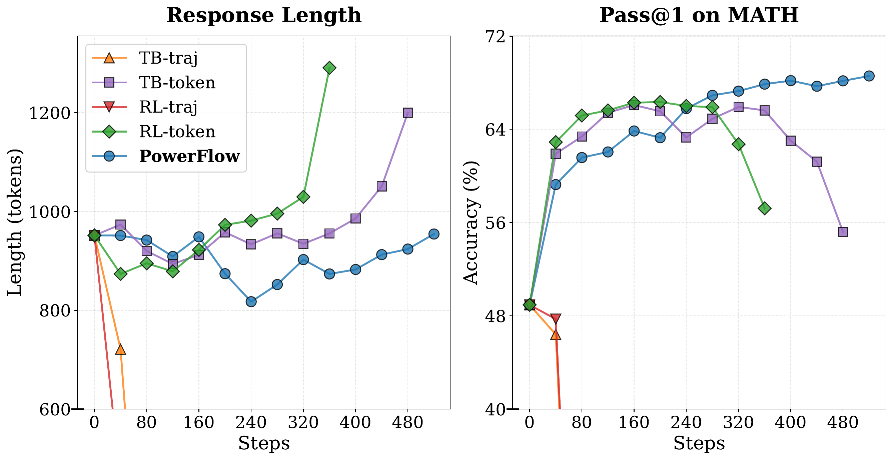
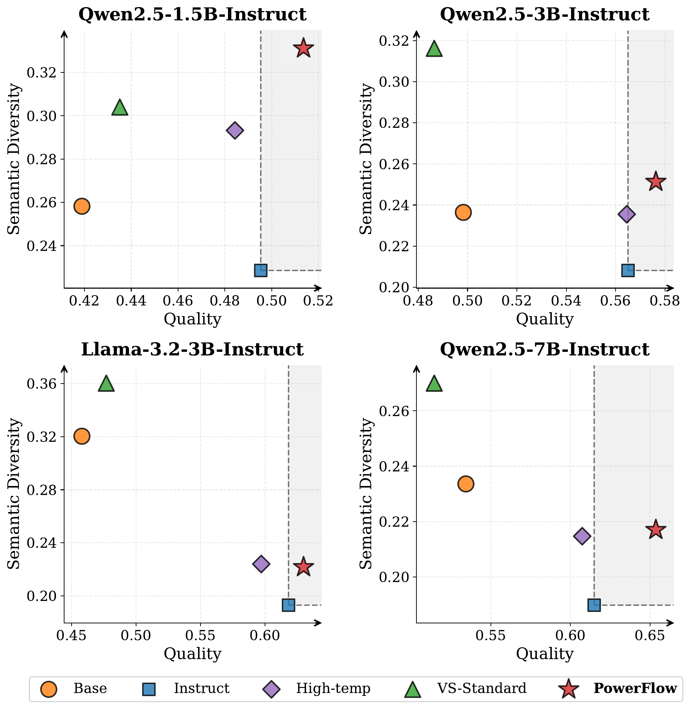
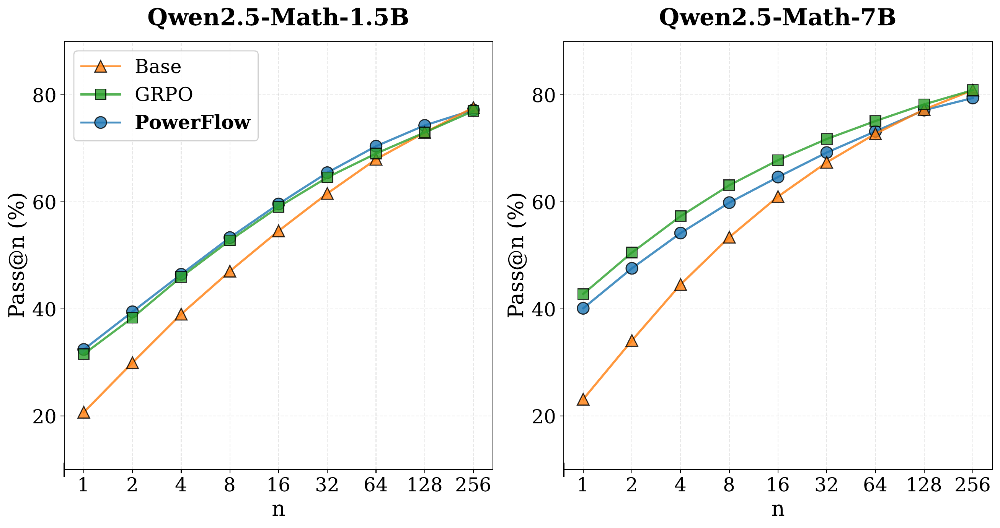

Naïve TB / RL: length collapse at $\alpha\!>\!1$.
Token TB: repetition decay at $\alpha\!\lt\!1$.
PowerFlow stays length-stable with monotonic gains on MATH.
Unsupervised RLIF elicits latent LLM capabilities, but its heuristic rewards cause: length collapse, overconfidence, mode collapse, & reward hacking.
Recast fine-tuning as distribution matching. Target the $\alpha$-power (escort) distribution of the base model — entropy modulates while rankings & mode structure are strictly preserved:

Naïve TB / RL: length collapse at $\alpha\!>\!1$.
Token TB: repetition decay at $\alpha\!\lt\!1$.
PowerFlow stays length-stable with monotonic gains on MATH.
Bypass the intractable $Z(q)$ via Trajectory Balance (TB), a variational surrogate that at equilibrium of $Z_\phi$ satisfies $\mathbb{E}[\nabla_\theta\mathcal L_{\text{TB}}]=2\nabla_\theta\mathbb{D}_{\text{KL}}(P_F\Vert p_{\text{target}})$.
But: on LLMs this is dominated by sequence length, not semantic density — causing length collapse ($\alpha>1$) or repetition explosion ($\alpha\lt 1$).
Reparameterize $Z_\phi(q,y)=\bigl(Z'_\phi(q)\bigr)^{|y|}$ and normalize by $|y|$ — projecting onto a length-normalized energy surface:
The induced target is a 1-D exponential tilt of $p_\alpha$ by $|y|$: $\pi^\star\!\propto\!p_{\text{base}}^{\alpha}\,e^{-\lambda_q|y|}$.
Empirical: pairwise inversion rate vs. the ideal $\alpha$-power target on Qwen2.5-Math-1.5B is IR ≈ 0.09 — ~91% of rankings preserved.
Avg@16 on MATH500 · Olympiad · AIME24/25 · AMC23 · GPQA
| Method | Avg. | Δ GRPO |
|---|---|---|
| Qwen2.5-1.5B | ||
| Intuitor | 18.95 | +0.82 |
| PowerFlow | 19.85 | +1.72 |
| GRPO (sup.) | 18.13 | ref |
| Qwen2.5-Math-1.5B | ||
| EMPO | 32.45 | −0.30 |
| PowerFlow | 34.30 | +1.55 |
| GRPO (sup.) | 32.75 | ref |
| Llama-3.2-3B-Inst. | ||
| PowerFlow | 22.88 | +0.55 |
| GRPO (sup.) | 22.33 | ref |
| Qwen2.5-Math-7B | ||
| EMPO / TTRL | 40.88 / 41.18 | −1.50 / −1.20 |
| PowerFlow | 42.17 | −0.21 |
| GRPO (sup.) | 42.38 | ref |
Strategy-diversity on AIME24/25 (DeepSeek-V3.2 judge, 16 samples/problem). The $\alpha$-power transform preserves the base model's multi-modal structure — no monolithic mode collapse.

